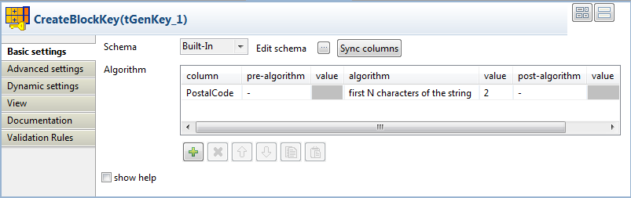
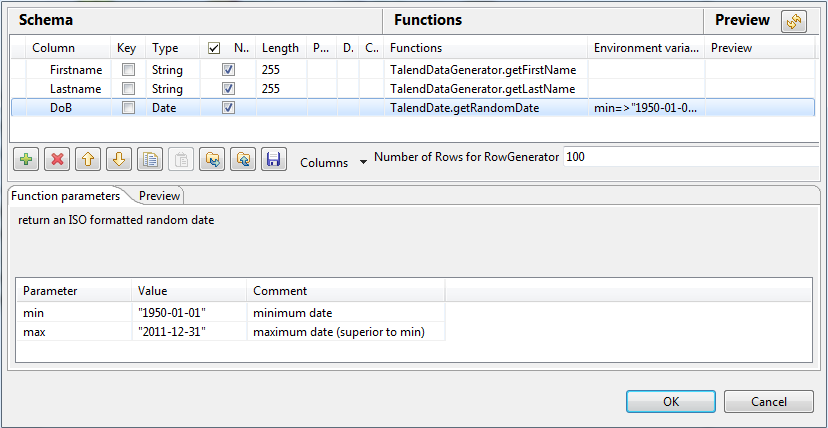

Avertissement
Ce composant est disponible dans la Palette du studio si vous avez souscrit à l'un des produits Talend Platform.
|
Famille de composant |
Data Quality | |
|
Fonction |
Le composant tGenKey vous permet d’appliquer différents types d’algorithmes sur chaque colonne d’entrée et d’utiliser les résultats calculés pour générer une clé fonctionnelle. Ces algorithmes peuvent être des algorithmes clé ou des algorithmes facultatifs. NoteLes valeurs retournées par les algorithmes clé seront concaténées, selon l’ordre des colonnes dans la table Key composition. | |
|
Objectif |
Le composant tGenKey génère une clé fonctionnelle à partir des colonnes d’entrée, en appliquant différents types d’algorithmes sur chaque colonne et en regroupant les résultats calculés en une seule clé. | |
|
Basic settings |
Schema et Edit schema |
Un schéma est une description de lignes, il définit le nombre de champs qui sont traités et passés au composant suivant. Le schéma est soit local (built-in) soit distant dans le Repository. Cliquez sur Sync columns pour récupérer le schéma du composant précédent dans le Job. |
|
|
|
Built-in : Le schéma est créé et conservé ponctuellement pour ce composant seulement. Voir également le Guide utilisateur de Talend Data Integration Studio. |
|
|
|
Repository : Le schéma existe déjà et est stocké dans le Repository. Ainsi, il peut être réutilisable dans divers projets et Job designs. Voir également le Guide utilisateur de Talend Data Integration Studio. |
|
Algorithm |
Column |
Sélectionnez la (les) colonne(s)du flux principal sur laquelle vous souhaitez définir certains algorithmes pour définir la clé fonctionnelle. NoteLorsque vous sélectionnez une colonne de dates sur laquelle appliquer un algorithme ou un algorithme de mise en correspondance, vous pouvez choisir ce que vous souhaitez comparer dans le format de date. Par exemple, si vous souhaitez comparer uniquement l'année, attribuez le type Date à la colonne concernée dans le schéma du composant puis saisissez "yyyy" dans le champ Date Pattern. Le composant convertit le format de date en une chaîne de caractères, selon le modèle défini dans le schéma, avant de comparer les chaînes de caractères. |
|
|
Pre-Algorithm |
Au besoin, sélectionnez l’algorithme de correspondance adéquat dans la liste : remove diacritical marks : supprime tout signe diacritique. remove diacritical marks and lower case : supprime tout signe diacritique et convertit en minuscules avant de générer le code de la colonne. remove diacritical marks and upper case : supprime tout signe diacritique et convertit en majuscules avant de générer le code de la colonne. lower case : convertit le champ en lettres minuscules avant d’appliquer l’algorithme clé. upper case : convertit le champ en lettres majuscules avant d’appliquer l’algorithme clé. add left position character : vous permet d’ajouter un caractère à gauche de la colonne. add right position character : vous permet d’ajouter un caractère à droite de la colonne. |
|
|
Value |
Définissez la valeur de l’algorithme, là où il peut être appliqué. |
|
|
Algorithm |
Sélectionnez l’algorithme adéquat dans la liste : first character of each word : inclut dans la clé fonctionnelle le premier caractère de chaque mot dans la colonne. N first characters of each word : inclut dans la clé fonctionnelle les N premiers caractères de chaque mot dans la colonne. first N characters of the string : inclut dans la clé fonctionnelle les N premiers caractères de la chaîne de caractères. last N characters of the string : inclut dans la clé fonctionnelle les N derniers caractères de la chaîne de caractères. first N consonants of the string : inclut dans la clé fonctionnelle les N premières consonnes de la chaîne de caractères. first N vowels of the string : inclut dans la clé fonctionnelle les N premières voyelles de la chaîne de caractères. pick characters : inclut dans la clé fonctionnelle les caractères situés à une position fixe (correspondant au chiffre défini/à la plage définie). exact : inclut dans la clé fonctionnelle la chaîne de caractères complète. substring(a,b) : inclut dans la clé fonctionnelle un caractère selon l’index défini. soundex code : génère un code selon un algorithme anglais standard. Ce code représente la chaîne de caractères qui sera incluse dans la clé fonctionnelle. metaphone code : génère un selon la prononciation des caractères. Ce code représente la chaîne de caractères qui sera incluse dans la clé fonctionnelle. double-metaphone code : génère un code selon la prononciation des caractères en utilisant une nouvelle version de l’algorithme phonétique Metaphone, produisant des résultats plus précis que l’algorithme original. Ce code représente la chaîne de caractères qui sera incluse dans la clé fonctionnelle. fingerPrintkey : génère une clé fonctionnelle d'une valeur d'une chaîne de caractères via la séquence suivante :
nGramkey : cet algorithme est similaire à la méthode fingerPrintkey décrite ci-dessus. Au lieu d'utiliser des jetons séparés par des espaces, il utilise n-grammes, où n peut être spécifié par l'utilisateur. Cette méthode génère la clé fonctionnelle d'une valeur d'une chaîne de caractères via la séquence suivante :
colognPhonetic : un algorithme phonétique Soundex optimisé pour l'allemand. Il encode une chaîne de caractères en une valeur phonétique de Cologne. Ce code représente la chaîne de caractères qui sera incluse dans la clé fonctionnelle. |
|
|
Value |
Définissez la valeur de l’algorithme, là où il peut être appliqué. |
|
|
Post-Algorithm |
Si nécessaire, sélectionnez l’algorithme de correspondance adéquat dans la liste : use default value (chaîne de caractères) : vous permet de choisir une chaîne de caractères pour remplacer des données null ou vides. add left position character : vous permet d’ajouter un caractère à gauche de la colonne. add right position character : vous permet d’ajouter un caractère à droite de la colonne. |
|
|
Value |
Définissez la valeur de l’option, là où elle est applicable. |
|
|
Show help |
Cochez cette case pour afficher les instructions concernant la définition des paramètres des algorithmes/options. |
|
Advanced settings |
tStatCatcherStatistics |
Cochez cette case pour collecter les métadonnées de process du Job, aussi bien au niveau du Job qu’au niveau de chaque composant. |
|
Utilisation |
Ce composant est un composant intermédiaire. Il requiert un flux d’entrée et un flux de sortie. Il peut être utilisé avec d’autres composants, comme le tMatchGroup, afin de créer une clé de bloc (blocking key). | |
Ce scénario comprend trois composants. Il décrit un Job simple qui génère une clé fonctionnelle pour chaque enregistrement de données utilisant un algorithme sur l’une des colonnes d’entrée, PostalCode.
Note
Cette clé fonctionnelle peut être utilisée de différentes façons, afin de réduire le nombre de résultats d’un filtre sur les données ou d’une correspondance de données, par exemple. Le composant tGenKey peut être utilisé avec de nombreux composants de qualité ou d’intégration de données, lors d’utilisations variées. Pour un exemple d’utilisation du tGenKey, consultez la section intitulée « Scénario 2 : Comparer les colonnes et regrouper dans le flux de sortie les enregistrements en doublon ayant la même clé fonctionnelle ».
Dans ce scénario, le flux de données d’entrée se compose de quatre colonnes : Firstname, Lastname, DOB, et PostalCode (Prénom, Nom, Date de naissance et Code postal). Ces données contiennent des problèmes, comme des doublons, des prénoms ou des noms écrits différemment ou mal orthographiés, des informations différentes sur un même client, etc. Ce scénario génère une clé fonctionnelle pour chaque enregistrement de données utilisant un algorithme qui concatène les deux premiers caractères du code postal.

Déposez les composants suivants de la Palette dans l’espace de modélisation graphique : tFixedFlowInput, tGenKey et tLogRow.

Connectez les composants à l’aide de liens Row > Main.
Double-cliquez sur le tFixedFlowInput afin d’afficher sa vue Basic settings et de définir ses propriétés.

Cliquez sur le bouton [...] à côté du champ Edit Schema pour ouvrir la boîte de dialogue [Schema].

Cliquez sur le bouton [+] pour ajouter autant de lignes que nécessaire au schéma d’entrée que vous souhaitez créer, à partir de variables internes.
Dans cet exemple, le schéma se compose de quatre colonnes : Firstname, Lastname, DOB et PostalCode.
Cliquez sur OK pour fermer la boîte de dialogue.
Dans la zone Mode, sélectionnez l’option Use Inline Table.
Le tableau Value s’affiche en tant que Inline Table.

Cliquez sur le bouton [+] pour ajouter autant de lignes que nécessaire puis cliquez sur chacune d’entre elles pour définir les données d’entrée des quatre colonnes.
Double-cliquez sur le tGenKey pour afficher sa vue Basic settings et définir ses propriétés.
Sous le tableau Algorithm, cliquez sur le bouton [+] afin d’ajouter une ligne.
Dans la colonne column, cliquez sur la nouvelle ligne et sélectionnez dans la liste la colonne sur laquelle vous souhaitez appliquer l’algorithme. Dans cet exemple, sélectionnez PostalCode.
Note
Lorsque vous sélectionnez une colonne de dates sur laquelle appliquer un algorithme ou un algorithme de mise en correspondance, vous pouvez choisir ce que vous souhaitez comparer dans le format de date.
Par exemple, si vous souhaitez comparer uniquement l'année, attribuez le type Date à la colonne concernée dans le schéma du composant puis saisissez "yyyy" dans le champ Date Pattern. Le composant convertit le format de date en une chaîne de caractères, selon le modèle défini dans le schéma, avant de comparer les chaînes de caractères.
Dans la colonne algorithm, cliquez sur la nouvelle ligne et sélectionnez dans la liste l’algorithme que vous souhaitez appliquer à la colonne correspondante. Dans cet exemple, sélectionnez first N characters of the string.
Cliquez sur la colonne Value et saisissez la valeur de l’algorithme sélectionné, si besoin. Dans ce scénario, saisissez 2.
Dans cet exemple, générez une clé fonctionnelle contenant les deux premiers caractères du code postal pour chaque ligne de données, et ne définissez aucune option supplémentaire pour ces colonnes.
Note
Vous pouvez cocher la case Show help afin d’afficher les instructions concernant la définition des paramètres des algorithmes et des options.
Après avoir paramétré le composant tGenKey, vous pouvez afficher une vue statistique de ces paramètres. Pour ce faire :
Cliquez-droit sur le composant tGenKey et sélectionnez View Key Profile dans le menu contextuel.
L’éditeur View Key Profile s’affiche et vous permet de visualiser les statistiques du nombre de lignes par blocs et d’adapter les paramètres selon le résultat que vous souhaitez obtenir.
Note
Lors du traitement de données volumineuses et lorsque ce composant est utilisé pour partitionner les données afin de les utiliser dans un composant de mise en correspondance (tRecordMatching ou tMatchGroup par exemple), il est préférable d’avoir un nombre restreint de lignes par blocs. La configuration est considérée comme optimale autour de 50 lignes par blocs, mais cela dépend du nombre de champs à comparer, du nombre total de lignes et du temps considéré comme acceptable pour le traitement des données.
Note
Pour un exemple d’utilisation de l’option View Key Profile, consultez la section intitulée « Scénario 2 : Comparer les colonnes et regrouper dans le flux de sortie les enregistrements en doublon ayant la même clé fonctionnelle »
Double-cliquez sur le composant tLogRow afin d’afficher sa vue Basic settings et définir ses propriétés.
Dans la zone Mode, sélectionnez l'option Table pour afficher les résultats d'exécution du Job sous forme de tableau.

Sauvegardez votre Job et appuyez sur F6 pour l’exécuter.

Toutes les colonnes de sortie comprenant la colonne T_GEN_KEY sont listées dans la console de la vue Run. La clé fonctionnelle pour chaque enregistrement de données concatène les deux premiers caractères de la valeur correspondante dans la colonne PostalCode.
Ce second scénario décrit un Job comprenant quatre composants, dont le but est de :
générer une clé fonctionnelle utilisant un algorithme sur l’une des colonnes d’entrée, DoB ;
mettre en correspondance les colonnes selon certains types de correspondances ;
regrouper les colonnes de sortie via la clé fonctionnelle générée afin d’optimiser l’opération de mise en correspondance et comparer uniquement les enregistrements ayant la même valeur de bloc, la clé fonctionnelle dans ce scénario. Pour plus d’informations concernant le regroupement des colonnes de sortie et l’utilisation des valeurs de bloc, consultez la section intitulée « tMatchGroup ».

Déposez les composants suivants de la Palette dans l’espace de modélisation graphique : tRowGenerator, tGenKey, tMatchGroup et tLogRow.
Connectez les composants les uns aux autres à l’aide de liens Row > Main.
Double-cliquez sur le tRowGenerator afin de définir son schéma comme suit :
Le composant tRowGenerator génèrera un flux de données d’entrée comprenant trois colonnes : Firstname, Lastname, et DOB (date de naissance). Ces données peuvent contenir des problèmes, comme des doublons, des prénoms ou des noms écrits différemment ou mal orthographiés, des informations différentes sur un même client, etc.
Cliquez sur OK pour valider les paramètres et fermer la boîte de dialogue.
Double-cliquez sur le tGenKey pour afficher sa vue Basic settings et définir ses propriétés.

Sous le tableau Algorithm, cliquez sur le bouton [+] afin d’ajouter une ligne.
Dans la colonne column, cliquez sur la nouvelle ligne et sélectionnez dans la liste la colonne sur laquelle vous souhaitez appliquer l’algorithme. Dans cet exemple, sélectionnez DoB.
Dans la colonne algorithm, cliquez sur la nouvelle ligne et sélectionnez dans la liste l’algorithme que vous souhaitez appliquer à la colonne correspondante. Dans cet exemple, sélectionnez substring(a,b).
Cliquez sur la colonne value et saisissez la valeur de l’algorithme sélectionné, si besoin. Dans ce scénario, saisissez 6,10.
Note
L’algorithme substring(a,b) permet d’extraire les caractères d’une chaîne situés entre deux indices, et de retourner la nouvelle sous-chaîne. Le premier caractère est numéroté 0. Dans ce scénario, pour une date de naissance “21-01-1995”, la valeur 6,10 retourne uniquement l’année de naissance, soit “1995” qui correspond à la sous-chaîne du 7ème au 10ème caractère.
Dans cet exemple, générez une clé fonctionnelle contenant les quatre derniers caractères, correspondant à l’année dans la date de naissance (DoB), pour chaque ligne de données, et ne définissez aucune option supplémentaire pour ces colonnes.
Note
Vous pouvez cocher la case Show help afin d’afficher les instructions concernant la définition des paramètres des algorithmes et des options.
Après avoir paramétré le composant tGenKey, vous pouvez afficher une vue statistique de ces paramètres. Pour ce faire :
Cliquez-droit sur le composant tGenKey et sélectionnez View Key Profile dans le menu contextuel.

L’éditeur View Key Profile s’affiche et vous permet de visualiser les statistiques du nombre de blocs et d’adapter les paramètres selon le résultat que vous souhaitez obtenir.
Note
Lors du traitement de données volumineuses et lorsque ce composant est utilisé pour partitionner les données afin de les utiliser dans un composant de mise en correspondance (tRecordMatching ou tMatchGroup par exemple), il est préférable d’avoir un nombre restreint de lignes par blocs. La configuration est considérée comme optimale autour de 50 lignes par blocs, mais cela dépend du nombre de champs à comparer, du nombre total de lignes et du temps considéré comme acceptable pour le traitement des données.
Si nécessaire, vous pouvez :
éditer la limite (Limit) du nombre de lignes utilisées pour calculer les statistiques ;
éditer la colonne (column) sur laquelle vous souhaitez appliquer l’algorithme ;
éditer l’algorithme (algorithm) à appliquer sur la colonne correspondante ;
éditer la valeur (value) la valeur de l’algorithme sélectionné, etc.
Note
Pour chaque modification effectuée, vous pouvez visualiser ses implications en cliquant sur le bouton Refresh situé en haut à droite de l’éditeur.
Double-cliquez sur le composant tMatchGroup pour afficher sa vue Basic settings et définir ses propriétés.

Note
Si vous souhaitez ajouter une colonne fixe de sortie, MATCHING_DISTANCES, donnant le détail de la distance entre chaque colonne, cliquez sur l’onglet Advanced settings et cochez la case Output distance details. Pour plus d’informations, consultez la section intitulée « Propriétés du tMatchGroup ».
Cliquez sur le bouton Sync columns afin de récupérer le schéma du composant précédent.
Si nécessaire, cliquez sur le bouton Edit schema pour voir le schéma d’entrée et le schéma de sortie et effectuer toute modification requise sur le schéma de sortie.

Note
Dans le schéma de sortie de ce composant, quatre colonnes standard de sortie sont en lecture seule. Pour plus d’informations, consultez la section intitulée « Propriétés du tMatchGroup ».
Dans le tableau Key definition, cliquez sur le bouton [+] pour ajouter à la liste les colonnes sur lesquelles vous souhaitez effectuer la mise en correspondance, FirstName et LastName dans ce scénario.
Cliquez sur la première et la deuxième cellules de la colonne Matching type et sélectionnez dans la liste la (les) méthode(s) à utiliser pour effectuer la mise en correspondance, Jaro-Winkler dans cet exemple.
Cliquez sur la première et la deuxième cellules de la colonne Confidence Weight et définissez les poids numériques pour chacune des colonnes utilisées comme attributs de clés.
Cliquez sur le bouton [+] sous le tableau Blocking Definition afin d’ajouter une ligne, puis cliquez sur cette ligne et sélectionnez dans la liste la colonne que vous souhaitez utiliser comme une valeur de bloc, T_GEN_KEY dans cet exemple.
Utiliser une valeur de bloc réduit le nombre de paires d’enregistrements à examiner. Les données d’entrée sont partitionnées en blocs exhaustifs basés sur la clé fonctionnelle. Cela permet de diminuer le nombre de paires à comparer, puisque la comparaison est limitée aux paires d’enregistrements dans chaque bloc.
Double-cliquez sur le composant tLogRow afin d’afficher sa vue Basic settings et définir ses propriétés.
Dans la zone Mode, sélectionnez l'option Table pour afficher les résultats d'exécution du Job sous forme de tableau.
Sauvegardez votre Job et appuyez sur F6 pour l’exécuter.

Les colonnes de sortie incluent la colonne T_GEN_KEY contenant la clé fonctionnelle générée par le composant tGenKey. Vous pouvez constater que tous les enregistrements ayant la même clé fonctionnelle sont regroupés en trois groupes de blocs différents. Tous les enregistrements ayant la même clé fonctionnelle sont partitionnés en trois groupes de blocs. L’identifiant de chaque groupe est affiché dans la colonne GID à côté de l’enregistrement correspondant. Le nombre d’enregistrements dans chacun des trois blocs de sortie est listé dans la colonne GRP_SIZE et calculé uniquement sur l’enregistrement maître. La colonne MASTER indique par true/false si l’enregistrement correspondant est un enregistrement maître ou non. La colonne SCORE affiche la distance calculée entre l’enregistrement d’entrée et l’enregistrement maître selon l’algorithme de correspondance Jaro-Winkler.